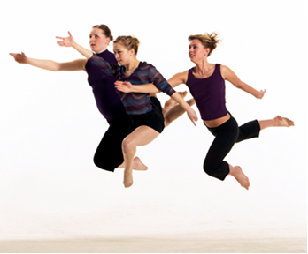

Enloe is unique as it is the only high school in Wake County that allows students to study dance during the school day and progress from beginning to advanced levels.
Students explore intellectual, kinesthetic, and aesthetic facets of ballet and modern dance. Classes in Tap and Ethnic Dance are also offered. Daily technique classes are balanced by study of composition, improvisation, and dance history. Students gain performance experience through serious concert work. Enloe dance students have received scholarships to UNC-G (Reynolds Scholar), Univ. of Illinois, & American Dance Festival.
Contact: Ms. Greer cgreer@wcpss.net
Location: Dance Studio 2417 above the West Gym
Please wear proper dance attire.
Tuesday, April 8, 2014 at 3pm (arrive at 2:45p): Ligon, Centennial, Carnage, E. Millbrook, EHS Students
Thursday, April 10, 2014 at 3pm (arrive at 2:45p): Martin, Moore Square, E. Wake, W. Millbrook, Exploris, EHS students
Thursday, April 10, 2014 at 4:15pm (arrive at 4pm): All interested ballet students. Wear leotard, tights, and ballet shoes
Tuesday, April 8, 2014 at 4:15pm (arrive at 4pm): All interested students. Wear appropriate shoes.
If a student is undecided on which dance style they are interested in then they may attend any of the placement classes (modern, ballet, jazz). If you desire to be in a beginning dance class it is REQUIRED to attend placement class.
